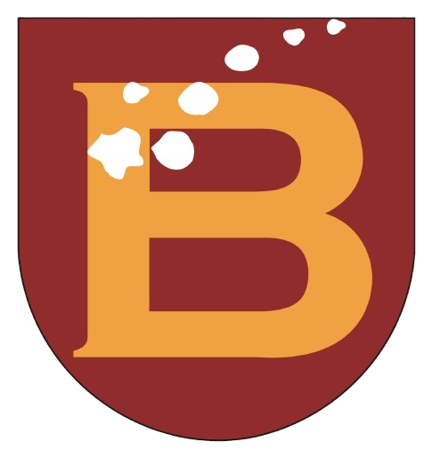

Project Capstone Kelompok 7 - Program Studi Informatika - Universitas Bakrie
6 diagram alur: alur utama end-to-end, RSVP, presensi QR + fallback, proposal, laporan, state diagram.
Buka ->Arsitektur, tech stack, modul, ERD, API, keamanan, NFR, roadmap, dan risiko.
Buka ->Diagram arsitektur sistem (inline SVG).
Buka ->Token warna, tipografi, spacing, dan komponen. Lolos kontras WCAG AA.
Buka ->High-fidelity 11 layar: dasbor, acara, scan, proposal, laporan, anggota, email, audit.
Buka ->W3C DTCG (tokens.dtcg.json) dan Tailwind v4 (theme.css).
Buka ->PHP + MySQL di folder app/: instalasi, 24 halaman, mailer, cron pengingat, migrasi.
app/77 skenario end-to-end (RBAC, CSRF, presensi ganda, rate-limit, proposal, email).
app/test_suite.shSalin app/ ke htdocs, lalu buka install.php dan login dengan akun demo.
app/README.md